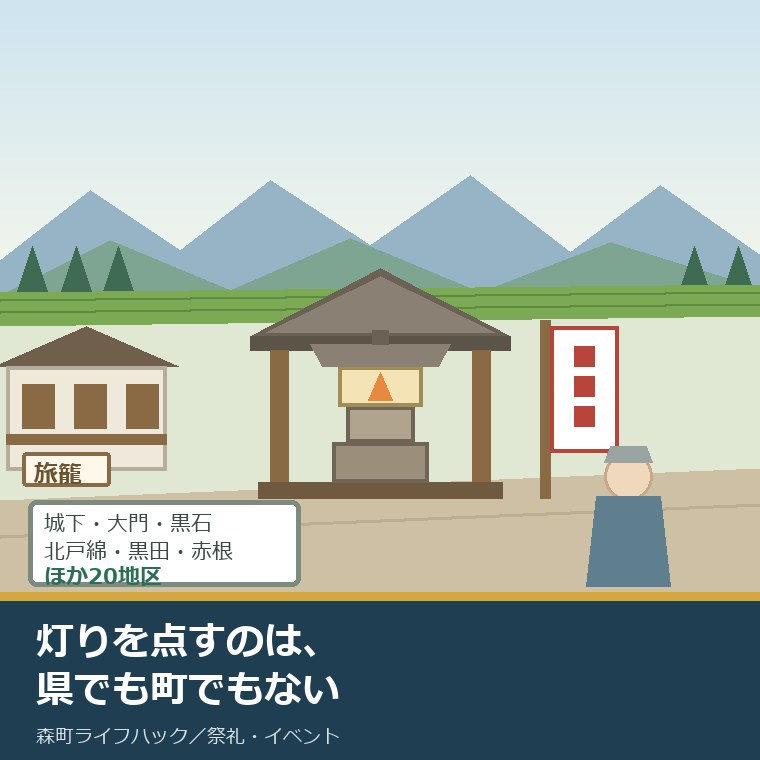
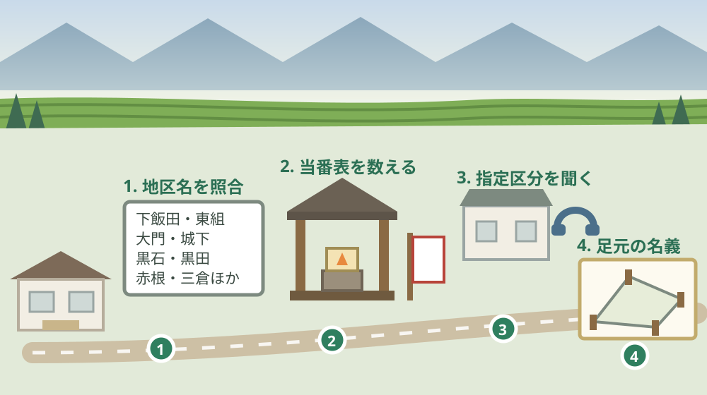

しずおか遺産「秋葉信仰と街道」｜森町の案内は誰が担うか

この記事の要点
Q. 秋葉街道沿いの地区に住んでいます。しずおか遺産に選ばれたと聞きましたが、うちの灯籠は何か変わるのでしょうか。
A. 認定は令和4年度で、森町は9市町の一つです。ただし県が2026年8月に公告した令和8年度の2件（紹介動画100万円・モデルツアー50万円）は、どちらも伊豆地域が対象です。森町の灯明と幟立ては、いまも地区が担っています。まず森町公式の20地区の一覧に自分の地区名があるか確かめてください。
静岡県周智郡森町（遠州森町）の、旧街道沿いの地区に住んでいる。家の前か、少し歩いた辻に、鞘堂に納まった常夜灯がある。この記事は、そういう地区の方と、沿道に土地家屋を持つ方に向けて書いています。
2026年に入って、この灯籠の背景に一つ肩書きが増えました。県が認定した「しずおか遺産」の構成文化財という位置づけです。ただ、それで地区の当番表が変わったという話は聞きません。
そこで、認定の中身と、県が今年度に何にお金を出そうとしているかを、公表資料から並べます。期待も落胆も先に置かずに、事実だけを順に見ます。
今日は2026年8月22日。県の文化財課のページが更新されたのは2026年8月21日、その前日です。載っていたのは令和8年度の業務委託2件の公告でした。
結論から言えば、その2件に森町は入っていません。けれど、だから意味がないという話にはなりません。順に並べます。
公式情報から確定できること
2026年8月22日時点で、静岡県公式サイトと森町公式サイトから確認できたことを並べます。出典は記事の末尾に載せています。
一つ目。しずおか遺産は、令和4年度に立ち上がった県の認定制度です。静岡県公式によれば、県内に点在する文化財をストーリーにより結び付け、県内外に本県の歴史文化の新たな魅力を発信し、文化財の活用の活性化を目指すものとされています。
二つ目。申請するのは県ではなく、複数市町の連携による代表市町です。同ページによれば、有識者による審査会が「ストーリー性」と「歴史文化資源の活用の可能性」を基準に判定します。手を挙げるのは市町の側です。
三つ目。「秋葉信仰と街道」は令和4年度の認定で、関係自治体は9市町です。認定申請書によれば、浜松市、湖西市、磐田市、袋井市、森町、掛川市、菊川市、牧之原市、御前崎市が並び、代表連絡先は浜松市市民部文化財課（053-457-2466）です。
四つ目。森町は、しずおか遺産9件のうち2件に名前が入っています。静岡県公式の認定一覧によれば、令和4年度認定の「近代教育に情熱をかけたしずおか人の結晶」（磐田市、菊川市、森町、松崎町）と、「秋葉信仰と街道」の2件です。
五つ目。ストーリーの筋には、森町を通る道が明記されています。認定申請書によれば、秋葉山（標高866メートル）を目指す道のうち、東からのルートは「東海道掛川宿から現在の森町を通るルート」とされています。
六つ目。塩の道の筋にも、森町が入っています。同申請書によれば、太平洋側からのルートは牧之原市相良から御前崎市、菊川市、掛川市、森町、浜松市天竜区水窪を経て塩尻（長野県）に至る道とされています。
七つ目。構成文化財は全48件で、森町を所在地とするのは2件です。同申請書の一覧では、23番「城下の鞘堂」（町指定・建造物）と、34番「三倉のまちなみ」（文化的景観）が森町の所在地として挙げられています。
八つ目。城下の鞘堂には、鋳物師の名前まで書かれています。同一覧によれば、この鞘堂は天保4年（同資料の表記は1834年）に建てられ、燈籠は「徳川家康の御用鋳物師である森町の山田七郎左衛門家とともに活躍した岡野家が鋳造した青銅製」とされています。
九つ目。三倉には、ハイキングコースが結び付けられています。同一覧によれば、三倉のまちなみはかつての秋葉山参詣者の宿場町で、三倉八幡宮は県指定の建造物、そして「三倉には家康の敗走伝承を元にした戦国夢街道（ハイキングコース）がある」とされています。
十番目。灯籠と鞘堂は、遠江地域に1,000基程度あるとされています。同一覧の27番「遠江地域の秋葉灯籠・鞘堂」は所在地を「関連全市」とし、その分布図には森町の黒石、城下、大門、北戸綿、黒田、赤根などが挙げられています。
十一番目。誰が灯りを点しているかも、申請書に書かれています。同申請書は「秋葉灯籠の中には、今なお、地元で灯りが点されているものがあり、灯籠への幟立てや新年のお札をいただく代参が毎年続けられている地区も多い」としています。
十二番目。森町公式は、常夜灯の残る地区を名指しで挙げています。森町公式の「秋葉信仰と森町」によれば、下飯田、東組、鴨谷、大門、城下、薄場、草ヶ谷、中田、赤根、宮代東、大鳥居、黒石、西俣、北戸綿、谷川、粟倉、米倉、鍛冶島、黒田、三倉の20地区です。
十三番目。灯籠の年号も分かっています。同ページによれば、内部の常夜灯籠は瓦製で、1813年（文化10年）のヘラ書きが見えるとされています。町内のサヤ堂の設計は切妻や美濃甲の破風のものがほとんどで、昭和19年の東南海地震で大破したものが多かったとも書かれています。
十四番目。秋葉講という仕組みがありました。同ページによれば、秋葉講という組織をつくって秋葉山に代参し、家内安全と火災消除を祈念したもので、盛時には全国で3万余の講社があったとされています。
十五番目。森町村は、街道の中核的な宿場でした。同ページは、森町村を「秋葉道の中核的宿場として、人馬の継立て、生活用品の集散地」とし、往還沿いは商家を連ね旅籠屋も多かったこと、城下の「みなとや」が今も残る旅の宿であることを記しています。
十六番目。ここからが2026年8月の動きです。しずおか遺産活用推進実行委員会は、2026年（令和8年）8月21日付で「令和8年度『しずおか遺産』紹介動画作成業務委託」の公募型企画提案を公告しました。
十七番目。その動画の対象は、伊豆です。同公告によれば、対象は令和7年度に認定した「ほとけ出づる祈りの里 伊豆」で、業務限度額は1,000,000円（消費税込）、業務期間は契約締結日の翌日から令和9年2月26日（金）までです。
十八番目。もう1件も伊豆です。同委員会は2026年（令和8年）8月18日付で「令和8年度『しずおか遺産』伊豆地域モデルツアー支援業務委託」を公告しており、契約限度額は500,000円（消費税込）です。
十九番目。締切は9月上旬です。動画の業務は参加申込書が令和8年9月4日（金）午後5時まで、企画提案書が令和8年9月7日（月）午後5時まで。モデルツアーの業務は参加申込書が9月1日（火）、企画提案書が9月4日（金）のいずれも午後5時必着です。
二十番目。問い合わせ先は県の一つの窓口です。両公告とも、しずおか遺産活用推進実行委員会事務局（静岡県スポーツ・文化観光部文化財課）で、電話は054-221-2554です。しずおか遺産の制度そのものの担当は054-221-3183です。
この絵で描きたかったのは、認定が届く範囲と、手が要る範囲がずれているという点です。台帳に載るのは鞘堂と常夜灯です。油を足し、火を入れ、幟を立てるのは、名簿に載らない誰かの時間です。
森町の暮らしに置き換えると、誰が何を担っているか
ここからは、公表された数字を、地区の側に割り戻します。私の計算であることを先に断っておきます。
県が2026年8月に公告した2件を合わせると、1,500,000円です。しずおか遺産は9件あるので、単純に9で割ると1件あたり約166,000円。ただし今年度のこの2件は、どちらも伊豆地域が対象です。
別の割り方もします。遠江地域の秋葉灯籠・鞘堂は約1,000基。仮に150万円を1,000基で割ると、1基あたり1,500円です。灯明の油代にもならない額だと分かります。
この計算は、県を責めるためのものではありません。公募される業務が動画とツアーであって、灯籠の維持ではないことを示すためのものです。費目が違えば、届く先も違います。
森町の側の数を見ます。常夜灯が残るのは20地区。1地区に1基としても20基で、灯明を毎晩点す前提なら、365日分の手間が20地区に分かれてかかります。
ここに、いまの森町の事情が重なります。当番が回る世帯数が減れば、1世帯あたりの回数が増えます。灯籠の手入れは、祭りの当番と同じ人に回ることが多いはずです。
祭りの当番と寄付が地区でどう動くかは、別の記事で数えました。八月から動き出す当番と寄付の実際は、十一月の森の祭りは八月に当番と寄付が動き出すという記事にまとめています。灯籠の手入れも、その名簿の中にあります。
秋葉講そのものの成り立ちを資料から追いたい方には、別の台帳があります。講の組織、代参、道標、火防札の並べ方は、森町の秋葉講を講組織・代参・道標・火防札で読む記事に整理しました。
良い点：この認定の、よくできているところ
まず、この制度のよくできているところを数えます。批判の前に置くのは、私の書き方の順番です。
一つ目。ストーリーで結ぶという設計が、単独では弱い文化財を救っています。森町の城下の鞘堂は町指定です。単体では県の事業の対象になりにくい。9市町の道の話にすると、同じ列に並びます。
二つ目。未指定の文化財を、正面から数えています。構成文化財48件のうち、多くは「未指定」と明記されたまま載っています。指定を待たずに位置づけを与える形は、地区にとって現実的です。
三つ目。分布が地区名まで書き下されています。森町の黒石、城下、大門、北戸綿、黒田、赤根。この粒度で書かれた資料は、地区の人が自分ごととして読めます。抽象的な「遠州の秋葉信仰」では、誰も自分の話だと思いません。
四つ目。代表市町を立てる形が、事務の重さを分散しています。「秋葉信仰と街道」の代表連絡先は浜松市です。9市町がそれぞれ県と交渉する形にしなくて済んでいます。
五つ目。森町公式の側にも、下敷きになる記述が残っています。20地区の名前、1813年のヘラ書き、昭和19年の東南海地震での大破、みなとやの現存。認定のあとで慌てて作った資料ではなく、以前からある記述が使われています。
注文したい点：公表情報だけでは埋まらないところ
その上で、一事業者として注文したい点を並べます。県の担当も市町の担当も、限られた人数で動いていることは承知の上です。
一つ目。認定後に何が起きるのかが、公表資料からは読み取れません。令和4年度の認定から4年が経っていますが、「秋葉信仰と街道」に対して県がこれまで何をしたのかを一覧にしたページは見当たりませんでした。
二つ目。今年度の2件が伊豆に寄っている理由が示されていません。直近に認定した遺産を優先するのは筋が通ります。ただ、その順番が公表されていないと、先に認定された側は「順番待ちなのか、終わったのか」が分かりません。
三つ目。灯明と幟立ての担い手を数えた資料がありません。灯籠は1,000基程度と数えられているのに、それを守っている人の数は、どの資料にも出てきません。数えられていないものは、減っても気づかれません。
四つ目。森町公式の秋葉信仰のページは、更新日が2019年3月5日のままです。内容は資料として価値がありますが、しずおか遺産の認定に触れていません。町の側と県の側が、同じ灯籠について別々に書いている状態です。
五つ目。来訪者を受ける側の案内がありません。ストーリーは「視聴者を現地に誘い」と書かれています。人が来たとき、地区の誰が何を説明するのか。一事業者としては、その1枚が先に要ると考えます。

対案・結論：今日、沿道の家で確かめられること
結論を急がないと決めたうえで、今日から動ける順番を書きます。順番はイラストのとおりです。
| 順番 | 確かめること | 確認先 |
|---|---|---|
| 1 | 自分の地区名が20地区の一覧にあるか | 森町公式「秋葉信仰と森町」の常夜灯所在地区の記述 |
| 2 | 灯明と幟立ての当番が、いま誰に回っているか | 地区の当番表。祭りの当番表と同じ綴りにあることが多い |
| 3 | 鞘堂や灯籠が町の指定文化財かどうか | 森町 社会教育課文化振興係 0538-85-1114 |
| 4 | 灯籠の建つ土地が誰の名義か | 登記事項証明書と公図。町道敷か個人名義かで扱いが変わる |
| 5 | しずおか遺産の構成文化財に入っているか | 静岡県 文化財課 054-221-3183 |
| 6 | 県の業務委託の公告が出ていないか | しずおか遺産活用推進実行委員会事務局 054-221-2554 |
1は、今日できます。森町公式のページを開いて、20の地区名を目で追うだけです。自分の地区名があれば、家の近くに常夜灯があるということです。
2は、地区の中の話です。当番表を1枚コピーして、誰が何回回っているかを数えます。ここで初めて、負担が見える形になります。
3と5は電話です。ただし1と2が済んでいれば、聞くことが一つに絞れます。「うちの地区の灯籠は、町の指定と県の構成文化財のどちらに入っていますか」で足ります。
4は、不動産の話です。灯籠や鞘堂の建つ小さな土地が、個人名義のまま相続で動いていないことがあります。ここは私の商売の範囲なので、あとで詳しく書きます。
三倉のように山側の地区であれば、来訪者の受け方そのものが変わります。距離ではなく便数で決まる移動の現実は、三倉・天方で距離より移動の代替を見る記事に書きました。
街道を歩いて来る人だけではありません。袋井から森町へのバス運賃は2026年5月に改定されています。その内訳は森町のバス運賃が17年ぶりに改定された記事で数えました。
町の指定文化財の全体像を先に見たい方には、別の記事があります。森町の文化財の区分と、所有者側の負担は森町の文化財を暮らしの側から見た記事にまとめています。
家族と地区に残す記録
ここからは、確認した内容を紙1枚に残すための項目です。次の代が同じことを調べ直さないためのものです。
書き留めるのは、灯籠のある地区名、鞘堂の有無、指定の区分（町指定・未指定・しずおか遺産の構成文化財）、灯明の当番の回り方、幟を立てる時期です。この5つで、地区の申し送りができます。
あわせて、灯籠が建つ土地の地番と名義、その土地を誰が管理しているか、森町の社会教育課文化振興係の電話番号（0538-85-1114）、静岡県文化財課の電話番号（054-221-3183）を並べておきます。
社寺の建物そのものを年代から読む見方もあります。鞘堂も、建てられた年と改修の履歴を並べれば、地区がどこで力を割いてきたかが見えます。城下の鞘堂の天保4年という年号は、その手がかりの一つです。
実家の名義、境界、農地、道路まで含めて順に整理したい方は、ふじがおか実家カルテの森町相談窓口もご利用ください。住所が分かれば、建物と敷地のどちらについても、確認する順番を整理できます。
大石の視点
ここからは、私（大石浩之）の個人の考えです。公的な事実とは分けてお読みください。この件について、私自身が森町の地区で灯明の当番を務めた体験があるわけではありません。以下は公表資料を読んだうえでの私の見方です。
私が行政の事業を見るとき、良い点を先に数えて、注文を後に置きます。役所の中の人も、同じ制約の中で動いているからです。この制度についても、まず認定の設計は筋が通っていると考えています。
その上で、注文は一つに絞ります。認定した側は、認定した遺産が今どうなっているかを、数字で示してほしい。令和4年度から4年経った「秋葉信仰と街道」について、その一覧が見当たりませんでした。
ここは正直に書きます。この認定が、地区の負担を実際に軽くしたのかどうか、私には判断がつきません。灯明の当番が減ったという話も、増えたという話も、公表資料からは読み取れません。肩書きが増えたことが、手を増やしたのか、見に来る人だけを増やしたのか。私はまだ、どちらとも言えずにいます。
それでも一つだけ言い切ります。灯りを点しているのは、県でも町でもなく地区です。1,000基という数字は、そのまま1,000回分の誰かの手間です。ここを外して活用の話をすると、絵だけが立派になります。
不動産の目で見ると、この話には続きがあります。灯籠や鞘堂の建つ土地は、たいてい小さな筆です。数坪の土地が、明治や大正の名義のまま残っていることがあります。相続が何代も通っていない筆です。
その状態で困るのは、動かしたいときです。道路の拡幅で灯籠を数メートル移す、屋根を葺き替えるために足場を組む。どちらも土地の話に戻ります。名義が追えないと、地区は動けません。
私はこう案内しています。灯籠の写真を撮るのと同じ日に、その足元の地番を控えておく。それだけで、10年後の地区が助かります。登記事項証明書は1通600円で、法務局で誰でも取れます。
森町にとってのこの認定の価値は、観光客の数ではないと私は考えています。価値は、20地区の名前が県の資料に書かれたことのほうです。名前が残っていれば、次に手を挙げるときの根拠になります。
結論が保留のままでも、確認済みの事実が一つ増えたなら、それは前進です。自分の地区名があった。灯籠の指定区分が分かった。どちらも、次の判断を軽くします。
まとめ
- 静岡県公式によれば、しずおか遺産は令和4年度に立ち上がった認定制度で、複数市町の連携による代表市町が申請し、有識者の審査会が「ストーリー性」と「歴史文化資源の活用の可能性」で判定する（2026年8月22日確認）
- 認定は令和4年度3件、令和5年度2件、令和6年度2件、令和7年度2件の計9件
- 「秋葉信仰と街道」は令和4年度認定で、関係自治体は浜松市・湖西市・磐田市・袋井市・森町・掛川市・菊川市・牧之原市・御前崎市の9市町、代表連絡先は浜松市市民部文化財課（053-457-2466）
- 森町は9件中2件（「近代教育に情熱をかけたしずおか人の結晶」と「秋葉信仰と街道」）に名前が入っている
- 認定申請書によれば、東からの参詣ルートは「東海道掛川宿から現在の森町を通るルート」、塩の道は相良から御前崎市・菊川市・掛川市・森町・水窪を経て塩尻に至る
- 構成文化財48件のうち森町を所在地とするのは、23番「城下の鞘堂」（町指定・建造物）と34番「三倉のまちなみ」（文化的景観）の2件
- 城下の鞘堂は天保4年（同資料の表記は1834年）に建てられ、燈籠は森町の山田七郎左衛門家とともに活躍した岡野家が鋳造した青銅製とされている
- 27番「遠江地域の秋葉灯籠・鞘堂」は遠江地域に1,000基程所在するとされ、分布図に森町の黒石・城下・大門・北戸綿・黒田・赤根などが挙がる
- 同申請書は「灯籠への幟立てや新年のお札をいただく代参が毎年続けられている地区も多い」としている
- 森町公式によれば、秋葉山常夜灯が残るのは下飯田・東組・鴨谷・大門・城下・薄場・草ヶ谷・中田・赤根・宮代東・大鳥居・黒石・西俣・北戸綿・谷川・粟倉・米倉・鍛冶島・黒田・三倉の20地区
- 同ページによれば、内部の常夜灯籠は瓦製で1813年（文化10年）のヘラ書きが見え、町内のサヤ堂は昭和19年の東南海地震で大破したものが多い
- 同ページは、秋葉講が盛時には全国で3万余の講社を数えたこと、森町村が秋葉道の中核的宿場であったこと、城下のみなとやが今も残る旅の宿であることを記す
- しずおか遺産活用推進実行委員会は2026年8月21日付で「令和8年度『しずおか遺産』紹介動画作成業務委託」を公告し、対象は令和7年度認定の「ほとけ出づる祈りの里 伊豆」、業務限度額は1,000,000円
- 同委員会は2026年8月18日付で「令和8年度『しずおか遺産』伊豆地域モデルツアー支援業務委託」を公告し、契約限度額は500,000円
- 両業務とも期間は契約締結日の翌日から令和9年2月26日（金）まで、事務局は静岡県スポーツ・文化観光部文化財課（054-221-2554）
- 森町公式によれば、森町の国指定文化財は5件（建造物1・民俗4）、県指定文化財は11件（工芸5・絵画書跡2・天然記念物2・建造物2）で、遠江森町の舞楽は昭和57年1月14日に国指定
- 私の計算では、令和8年度の2件の合計1,500,000円をしずおか遺産9件で割ると1件あたり約166,000円、遠江地域の灯籠1,000基で割ると1基あたり1,500円
よくある質問
Q1. しずおか遺産「秋葉信仰と街道」に、森町のどこが入っていますか。
A1. 認定申請書によれば、構成文化財48件のうち森町を所在地とするのは、23番の城下の鞘堂（町指定・建造物）と、34番の三倉のまちなみ（文化的景観）の2件です。あわせて27番の遠江地域の秋葉灯籠・鞘堂は関連全市が所在地とされ、その分布図に森町の黒石、城下、大門、北戸綿、黒田、赤根などが挙げられています。
Q2. 認定されると、県から森町にお金が来るのですか。
A2. 2026年8月に公告された令和8年度の2件は、どちらも伊豆地域が対象です。紹介動画作成業務は令和7年度認定の「ほとけ出づる祈りの里 伊豆」を対象とし業務限度額1,000,000円、伊豆地域モデルツアー支援業務は契約限度額500,000円です。秋葉信仰と街道への配分は、この2件の公告からは読み取れません。
Q3. 森町で秋葉山常夜灯が残っているのは、どの地区ですか。
A3. 森町公式の秋葉信仰と森町のページは、下飯田、東組、鴨谷、大門、城下、薄場、草ヶ谷、中田、赤根、宮代東、大鳥居、黒石、西俣、北戸綿、谷川、粟倉、米倉、鍛冶島、黒田、三倉の20地区を挙げています。担当は社会教育課文化振興係（0538-85-1114）です。自分の地区名がこの中にあるかどうかが、最初の確認点になります。
最後に一つだけ。ここに書いた認定年度、構成文化財の番号、地区名、金額、締切は、いずれも2026年8月22日時点で公表されている内容です。令和4年度の認定以降に「秋葉信仰と街道」へ県がどのような事業を行ったか、令和8年度に伊豆地域以外を対象とする公募が今後出るか、森町の灯明と幟立てを担っている地区の数と人数は、公表資料からは確認できていません。動く前に、必ず静岡県文化財課（054-221-3183）と、森町の社会教育課文化振興係（0538-85-1114）へご確認ください。
参考にした公式情報
- しずおか遺産／静岡県（しずおか遺産が令和4年度に立ち上げられた認定制度で、県内に点在する有形・無形の文化財を結びつけたストーリーを募集し認定するものであること、申請が複数市町の連携による代表市町によること、有識者による審査会が「ストーリー性」と「歴史文化資源の活用の可能性」を基準に判定すること、認定が令和4年度3件・令和5年度2件・令和6年度2件・令和7年度2件の計9件であること、令和4年度認定に「近代教育に情熱をかけたしずおか人の結晶」（磐田市、菊川市、森町、松崎町）と「秋葉信仰と街道」（浜松市、湖西市、磐田市、袋井市、森町、掛川市、菊川市、牧之原市、御前崎市）が含まれること、令和7年度認定が「駿河湾のめぐみと行き交う船」と「ほとけ出づる祈りの里 伊豆」であること、担当がスポーツ・文化観光部文化財課（電話054-221-3183）であることを2026年8月22日に確認）
- しずおか遺産「秋葉信仰と街道」認定申請書（PDF）／静岡県（関係自治体が9市町であること、代表連絡先が浜松市市民部文化財課（053-457-2466）であること、秋葉山の標高が866メートルであること、東からの参詣路が「東海道掛川宿から現在の森町を通るルート」とされていること、塩の道の太平洋側ルートが牧之原市相良から御前崎市・菊川市・掛川市・森町・浜松市天竜区水窪を経て塩尻に至ること、構成文化財が48件であること、23番「城下の鞘堂」が町指定（建造物）で所在地が森町であり天保4年（1834年）に建てられ燈籠を徳川家康の御用鋳物師である森町の山田七郎左衛門家とともに活躍した岡野家が鋳造した青銅製であること、34番「三倉のまちなみ」が文化的景観で所在地が森町でありかつての秋葉山参詣者の宿場町で三倉八幡宮が県指定の建造物、三倉に家康の敗走伝承を元にした戦国夢街道（ハイキングコース）があること、27番「遠江地域の秋葉灯籠・鞘堂」が遠江地域に1000基程所在し分布図に森町の黒石・城下・大門・北戸綿・黒田・赤根などが挙げられていること、「灯籠への幟立てや新年のお札をいただく代参が毎年続けられている地区も多い」と記載されていること、森町本町や城下・三倉のまちなみに秋葉山参詣者の宿場町の面影が残ると記載されていることを2026年8月22日に確認）
- 令和8年度「しずおか遺産」紹介動画作成業務委託 公告（PDF）／静岡県（公告日が令和8年8月21日、公告者がしずおか遺産活用推進実行委員会委員長であること、対象が令和7年度に認定した「ほとけ出づる祈りの里 伊豆」であること、業務期間が契約締結日の翌日から令和9年2月26日（金）までであること、業務限度額が1,000,000円（消費税及び地方消費税相当額を含む）であること、参加要件に静岡県内に本社又は営業所等の事業拠点を有すること・過去5年以内に文化財に関する動画を制作した実績を有することが含まれること、募集要領の配布期間が令和8年8月21日（金）から令和8年9月4日（金）まで、参加申込書の提出期限が令和8年9月4日（金）午後5時、企画提案書の提出期限が令和8年9月7日（月）午後5時であること、事務局が静岡県スポーツ・文化観光部文化財課（電話054-221-2554）であることを2026年8月22日に確認）
- 令和8年度「しずおか遺産」伊豆地域モデルツアー支援業務委託 公告（PDF）／静岡県（公告日が令和8年8月18日であること、目的が伊豆地域の観光商品の造成を目指し周遊のための環境整備など受け入れ体制を磨き上げるモデルツアーの実施であること、委託期間が契約締結日の翌日から令和9年2月26日（金）までであること、契約限度額が500,000円（消費税及び地方消費税相当額を含む）であること、参加要件に旅行業（第1種、第2種又は第3種）の登録が含まれること、参加申込書の提出期限が令和8年9月1日（火）午後5時必着、企画提案書の提出期限が令和8年9月4日（金）午後5時必着であることを2026年8月22日に確認）
- 26 秋葉信仰と森町／静岡県森町（江戸時代に秋葉山が火防の神として庶民と武士の信仰を得たこと、秋葉講という組織をつくって秋葉山に代参し家内安全と火災消除を祈念したこと、盛時には全国で3万余の講社があったこと、掛川から秋葉山への主要ルートが「掛川〜森〜三倉〜坂下〜秋葉山へ通じる街道」であること、俗謡に「森の横町なぜ日が照らぬ 秋葉道者の笠のかげ」と伝えられること、秋葉山常夜灯が下飯田・東組・鴨谷・大門・城下・薄場・草ヶ谷・中田・赤根・宮代東・大鳥居・黒石・西俣・北戸綿・谷川・粟倉・米倉・鍛冶島・黒田・三倉に現存すること、町内のサヤ堂の設計が切妻や美濃甲の破風のものがほとんどで昭和19年の東南海地震で大破したものが多いこと、内部の常夜灯籠が瓦製で1813年（文化10年）のヘラ書きが見えること、村人の手によって毎夜灯明がともされ道行く人の便も図られたこと、森町村が秋葉道の中核的宿場として人馬の継立て・生活用品の集散地であり往還沿いは商家を連ね旅籠屋も多かったこと、城下のみなとやが今も残る旅の宿であること、担当が社会教育課文化振興係（電話0538-85-1114）であることを2026年8月22日に確認。ページ更新日 2019年3月5日）
- 文化財／静岡県森町（森町の国指定文化財が5件（建造物1件・民俗4件）、県指定文化財が11件（工芸5件・絵画書跡2件・天然記念物2件・建造物2件）であること、遠江森町の舞楽が国指定（民俗）で指定年月日が昭和57年1月14日であること、城下の街並みと秋葉山常夜灯が史跡・文化史跡として掲載されていること、担当が文化振興係（電話0538-85-1114）であることを2026年8月22日に確認。ページ更新日 2019年3月1日）
- 文化財課／静岡県（ページ更新日が2026年8月21日であること、令和8年度「しずおか遺産」紹介動画作成業務および令和8年度「しずおか遺産」伊豆地域モデルツアー支援業務の企画提案募集の公告が掲載されていること、担当がスポーツ・文化観光部文化財課（電話054-221-3183）であることを2026年8月22日に確認）

最終確認日：2026-08-22 ／ 本記事は公表情報と執筆者の見解を分けて記載しています。令和4年度の認定以降に「秋葉信仰と街道」へ県がどのような事業を行ったか、令和8年度に伊豆地域以外を対象とする公募が今後出るか、森町の灯明と幟立てを担っている地区の数と人数は、公表資料から確認できていません。制度・金額・締切は変更されることがあります。動く前に、必ず静岡県文化財課および森町の社会教育課文化振興係へご確認ください。